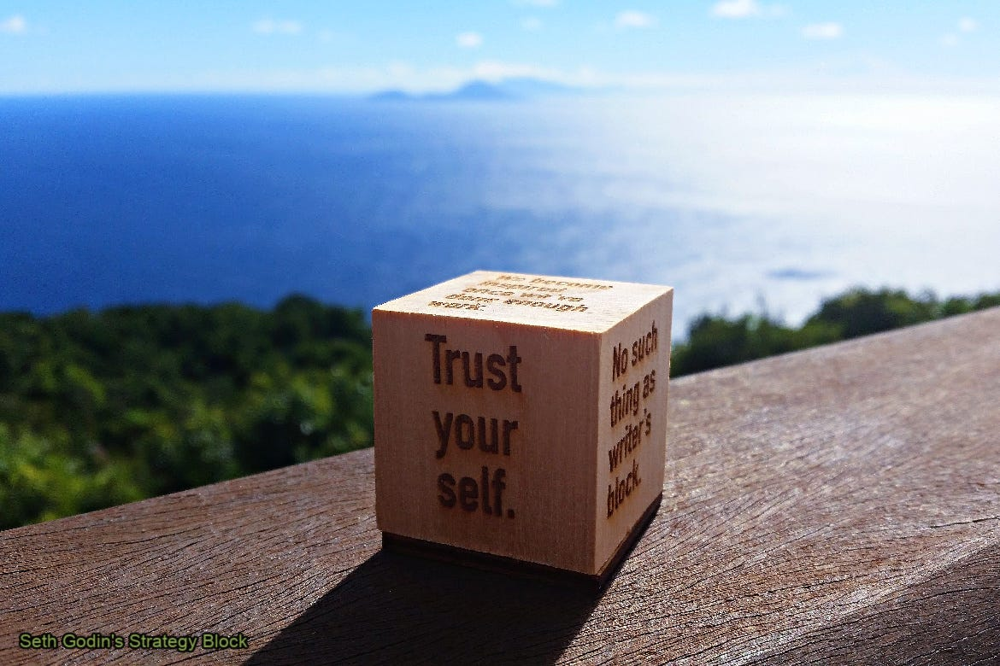

Feb 13
Show Me Your Bad Writing, Here is Mine
A simple cure for writer’s block and the next blogging platforms

Writing some 500 to 1000 words about something you noticed is empathic work, and today’s easiness of sharing words around the globe should make us more eager to be like you, I mean writing and sharing things that we think are interesting enough for us to read. If it is not interesting like how most of my articles are then you will for sure get the benefits of the sharing and be sure that people like me and you care about those who share. Writing about people is an act like that and I think that more people should start doing it if we want to reconquer the internet from the many bots and smart systems that are producing SEO-driven words to make us click and buy something. Making the internet human and personal like how it was at the beginning will be very beneficial to future generations and a way for us to build innovative, interesting, and meaningful artificial intelligence about reading and writing because most of the content that this AI will use to teach itself how to read and write for our benefits will come from writings and readings of real human beings like us.
Blogging was and is still about this act of sharing information and knowledge with others and like how every medium of information sharing like books, newspapers, emails have participated in the growth of our economy blogging fuelled also this economic and social growth. I remember the knowledge that I had gathered reading blogging platforms like Multimania way before google and bing disrupt Altavista when I was far from where the internet revolution was being executed by engaged tech early adopters and builders who had the real gut of making this world a better place not a marketplace for interruption marketers.
Now we, internet users, have the power to make the internet cleaner and better because the technical barriers for engaging with web things and building them have been broken a long time ago by WYSIWYG and CMS way before this new trend of nocode but we have been sold the idea that taking the time to write regularly some words and sharing them with the world doesn't matter anymore or if it still matters we would rather choose to share some pictures on Instagram, some characters on Twitter of Facebook, some short videos on TikTok or Youtube shorts. All of these are of course acts of sharing of facts, ideas, emotions, opinions, and sentiments and they all get also the benefits of the sharing but we could do way more with blogs. That’s why platforms like medium and substack matter because I see them as the foundation of the next internet that will be about curated and personal content written by real people like you and me, content made of words really intended for helping us better see the world around us and get to our goals. But fewer people are now holding blogs compared to the beginnings of this tech cultural idea of writing and sharing through the web. I myself never thought that blogging was important that’s why at the beginning I was not engaging myself in it even if I were aware of all the technical knowledge about SEO but hopefully understand now that blogging is not about arranging keywords for a search engine to index them but for sharing with people and caring about them. I am not well-positioned for advising you but I think that you should blog because it is important to us.
If you have writer’s block here is a simple cure for writer’s block.